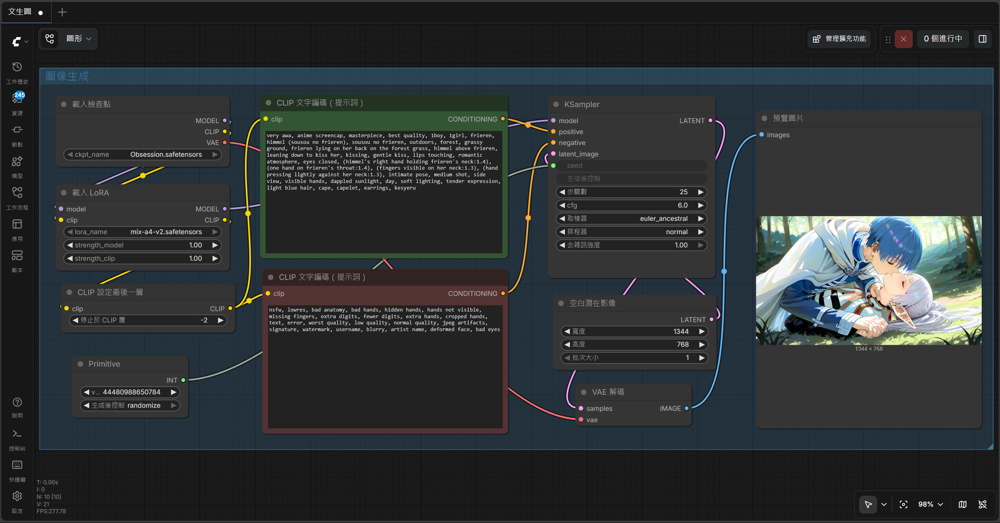
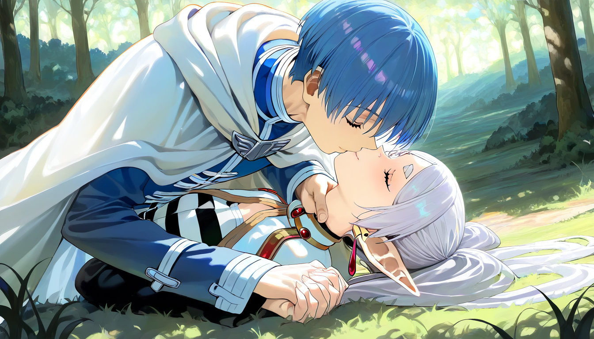
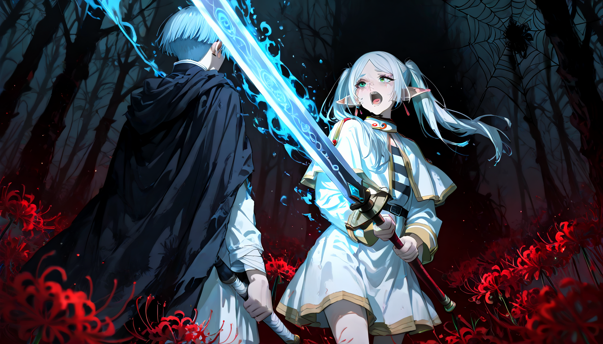

| 總分 | 完成後打勾 | 配分 | 分項描述 |
|---|---|---|---|
| 4 | Simple baseline - 完成ComfyUI建置 | ||
| 4 | Medium baseline - 完成芙莉蓮文生圖 | ||
| 2 | Strong baseline - 替換模型完成辛梅爾文生圖 | ||
| -10 | 沒有寫100字心得 |

1344 * 768
very awa, anime screencap, masterpiece, best quality, 1boy, 1girl, frieren, himmel (sousou no frieren), sousou no frieren, outdoors, forest, grassy ground, frieren lying on her back on the forest grass, himmel above frieren, leaning down to kiss her, kissing, gentle kiss, lips touching, romantic atmosphere, eyes closed, (himmel's right hand holding frieren's neck:1.4), (one hand on frieren's throat:1.4), (fingers visible on her neck:1.3), (hand pressing lightly against her neck:1.3), intimate pose, medium shot, side view, visible hands, dappled sunlight, day, soft lighting, tender expression, light blue hair, cape, capelet, earrings, kesyeru
nsfw, lowres, bad anatomy, bad hands, hidden hands, hands not visible, missing fingers, extra digits, fewer digits, extra hands, cropped hands, text, error, worst quality, low quality, normal quality, jpeg artifacts, signature, watermark, username, blurry, artist name, deformed face, bad eyes

1344 * 768
<lora:r17329_illu-000017:1>, r17329_illu, masterpiece, newest, absurdres, incredibly absurdres, 1boy, 1girl, duo, sousou no frieren, himmel \(sousou no frieren\), light blue hair, cape, capelet, earrings, crying, tears, open mouth, shouting, desperate expression, emotional expression, holding sword, swinging sword, powerful sword swing, slashing, dynamic pose, action pose, motion blur, foreground, frieren, white hair, long hair, twintails, green eyes, pointy ears, elf, in the background, behind, holding staff, casting magic, magic circle, glowing magic, blue magic, magic particles, energy, cowboy shot, looking forward, dark_theme, abstract background, dark forest, spider lily, red spider lily, lycoris radiata, spiders, spider web, cobweb, black mist, ominous atmosphere, tragic atmosphere, dramatic lighting, dappled darkness, depth of field, chromatic aberration
worst quality, bad quality, low quality, anatomical nonsense, bad anatomy, bad hands, interlocked fingers, extra fingers, missing fingers, fewer digits, extra arms, extra sword, broken sword, deformed face, bad eyes, closed mouth, smiling, calm expression, watermark, text, signature, username, blurry face, 2boys, 2girls, 3girls, extra person, extra heads
